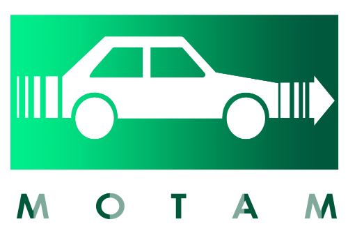
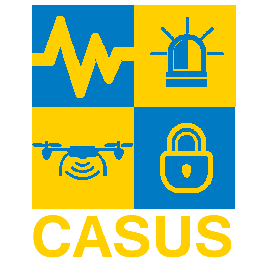
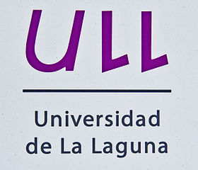
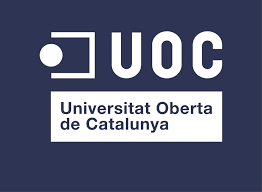

Soy un Ingeniero Informático que le encanta su profesión. Resolver problemas con el uso de las nuevas tecnologías, la seguridad y el desarrollo de aplicaciones innovadoras son algunos de mis objetivos.
Actualmente, soy miembro del grupo de investigación CryptULL de la Universidad de La Laguna donde trabajamos con un gran abanico de temas pero todos ellos con un foco común que es la seguridad. Dedicado a la investigación y en continua formación.
Publicaciones
-
Artículos publicados en revistas indexadas en el SCI, Journal Citation Reports
-
Néstor Álvarez-Díaz, Pino Caballero-Gil and Mike Burmester.
Luggage Control System based on NFC and Homomorphic Cryptography.
Mobile Information Systems Volume 2017 (2017), Article ID 2095161. 2015 ISI JCR Impact Factor: 1.462 -
Artículos publicados en proceedings de congresos con revisión pero no indexados en CORE
-
Néstor Álvarez-Díaz, Pino Caballero-Gil
Uso de NFC para Gestionar con Seguridad el Equipaje
Actas de la XIV Reunión Española sobre Criptología y Seguridad de la Información Menorca, 26-28 Octubre de 2016 -
Néstor Álvarez-Díaz, Pino Caballero-Gil
Safe Control of Luggage using NFC
16th International Conference on Computational and Mathematical Methods in Science and Engineering CMMSE 2016 4-8 July, 2016. Cádiz -
Néstor Álvarez-Díaz, Pino Caballero-Gil, Héctor Reboso-Morales, Francisco Martín-Fernández
Optimizing Resource Allocation and Indoor Location Using Bluetooth Low Energy
International Journal of Aerospace and Mechanical Engineering Vol:3, No:2. World Academy of Science , Engineering and Technology. 25 – 26 February 2016. London, UK. -
Néstor Álvarez-Díaz, Pino Caballero-Gil, Francisco Martín-Fernández
Task Assignment through Indoor Location with Bluetooth Low Energy Devices
4th International Conference on Theory and Practice in Modern Computing. 22 – 24 July 2015. Las Palmas de Gran Canaria, Spain.
Proyectos
-

MOTAM -
Medidas para Optimizar el Transporte por Carretera Mediante Aplicaciones
Móviles (01/07/2016 – 31/12/2018)
Entidad financiadora: Centro para el Desarrollo Tecnológico Industrial (CDTI).
Coordinadora general del proyecto y responsable científico-técnico en Alcatel-Lucent España S.A.: Mª Luisa Arranz Chacón.
Responsable científico-técnico del proyecto, y en la ULL: Pino Caballero Gil.
Responsable científico-técnico en la Universidad de Málaga: Isaac Agudo Ruiz.
Otros investigadores de la ULL: Candelaria Hernández Goya, Cándido Caballero Gil, Jezabel Molina Gil, Alexandra Rivero García, Iván Santos González, Néstor Álvarez Díaz, Moisés Lodeiro Santiago, Jonay Suárez Armas.
-
INSITU -
Implementación de Nuevos Servicios Inteligentes de Transporte para Usuarios
aeroportuarios (01/03/2016 a 28/02/2019)
Convocatoria: Proyectos de Investigación Fundación CajaCanarias 2015.
Investigadora Principal: Pino Caballero Gil
Otros investigadores: Ricardo Aguasca Colomo (ULPGC), Cándido Caballero Gil (ULL), Candelaria Hernández Goya (ULL), Félix Herrera Priano (ULL), Francisco Martín Fernández (ULL), Jezabel Molina Gil (ULL). Alexis Quesada Arencibia (ULPGC), Héctor Reboso Morales (ULL/Bin), Mariví Reyes Sánchez (ULL), Alexandra Rivero García (ULL), Iván Santos González (ULL), Néstor Álvarez Díaz (ULL).
-

CASUS –
Cooperación móvil segura Aplicada a Situaciones de emergencia e infraestrUcturas
críticas de tranSporte (01/09/2015 – 31/08/2018)
Convocatoria: Retos-Investigación 2014
Investigadora Principal: Pino Caballero Gil
Otros investigadores: Marisa Arranz Chacón (Alcatel), Ricardo Aguasca Colomo (ULPGC), Rafael Álvarez Sánchez (UAl), Mike Burmester (FSU, U.S.A.), Cándido Caballero Gil (ULL), Rubén García Rodríguez (ULPGC), Candelaria Hernández Goya (ULL), Félix Herrera Priano (ULL), Francisco Martín Fernández (ULL), Jezabel Molina Gil (ULL). Jorge Munilla Fajardo (UMa), Alexis Quesada Arencibia (ULPGC), Jorge Ramió Aguirre (UPM), Héctor Reboso Morales (ULL/Bin), Mariví Reyes Sánchez (ULL), Moti Yung (CU/Goo), Antonio Zamora Gómez (UAl), Alexandra Rivero García (ULL), Iván Santos González (ULL), Néstor Álvarez Díaz (ULL)
Experiencia
-
Puestos de Trabajo
-

Universidad de La Laguna
Departamento de Ingeniería de Informática y Sistemas
Personal Investigador
Febrero, 2016 - Actualidad
-
Binter Sistemas SL
Departamento de investigación informática
Becario
Mayo, 2015 - Febrero, 2016
-
Estudios
-

Máster en Seguridad de las tecnologías de la información y de las comunicaciones
Universitat Oberta de Catalunya
2016 - Actualidad
-
Grado en Ingeniería Informática
Universidad de La Laguna
2010 - 2015